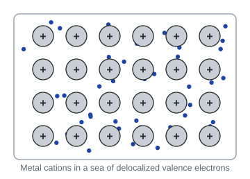

Copper can be drawn into wire, gold hammered into foil thinner than paper, and a steel knife holds a sharper edge than pure iron ever could. The first two facts come from metallic bonding; the third comes from mixing another element into the metal. This page explains both with one particle picture.
Metallic solids
Topic 2.1 introduced metallic bonding: metal atoms release their valence electrons into a sea of delocalized electrons, leaving a regular array of cations. A solid held together this way is a metallic solid. The attraction between the cations and the electron sea acts in every direction, and the electrons are not tied to any one pair of atoms.

Properties from the electron sea
Electrical conductivity. The delocalized electrons can move through the whole solid. Connect a battery and they drift toward the positive end: a current. Unlike an ionic compound, a metal conducts as a solid.
Thermal conductivity. The same mobile electrons carry energy quickly from a hot part of the metal to a cold part, which is why a metal spoon in hot soup heats up fast.
Malleable and ductile. A metal is malleable (it can be hammered into sheets) and ductile (it can be drawn into wire). When a force pushes one layer of cations past another, the electron sea moves with them and still surrounds every cation. No like charges are left facing each other, so the metal changes shape instead of breaking. Compare an ionic solid (2.3), where the same shift lines up like charges and the crystal splits.
| Ionic solid | Metallic solid | |
|---|---|---|
| Particles | cations and anions | cations and delocalized electrons |
| Conducts as a solid? | no: ions fixed | yes: electrons move |
| When struck | brittle: shatters | malleable: bends |
| Why | a shift brings like charges together | the electron sea moves with the cations |
Alloys
An alloy is a mixture of a metal with one or more other elements that keeps metallic properties: it still conducts and is still held by metallic bonding. Because it is a mixture, its composition can vary. There are two kinds, and the deciding factor is the size of the added atoms compared with the host metal's atoms.

Substitutional alloy. The added atoms are similar in size to the host atoms, so they take the places of some host atoms in the lattice. (As a rough guide, radii within about 15% mix most easily; a bigger mismatch, like tin in copper, still substitutes but only in smaller amounts.) Brass is copper (radius 128 pm) with zinc (134 pm); sterling silver is silver (144 pm) with copper (128 pm). Because the atoms are a little different in size, the layers are slightly bumpy, and the alloy is usually somewhat harder than the pure metal while staying malleable.
Interstitial alloy. The added atoms are much smaller than the host atoms, so they fit into the gaps (interstices) between them. Steel is iron (126 pm) with a small amount of carbon (77 pm). The small atoms sit between the layers like pins, so the layers cannot slide easily: the alloy is harder, stronger and less malleable than the pure metal. The added atoms can also strengthen the bonding, which makes the alloy harder still.
Worked example. Titanium (147 pm) is alloyed with aluminum (143 pm) for aircraft parts, and iron (126 pm) is hardened with boron (84 pm). Classify each alloy and predict which change makes the metal less malleable.
Ti with Al: the radii differ by 4 pm (about 3%), so Al atoms replace Ti atoms. Substitutional.
Fe with B: B is about one third smaller than Fe, small enough to sit in the gaps. Interstitial.
The boron in iron pins the layers, so that alloy loses the most malleability. Answer with the sizes of both atoms, not just "B is small".
Reading particle diagrams of alloys
- Same number of host atoms in the same places, plus small atoms in between: interstitial.
- Same places, but some host atoms replaced by a different atom of similar size: substitutional.
- The fraction of each element is the count of its atoms divided by the total number of atoms in the picture.
Common mistakes
- "An alloy is a compound." It is a mixture; its composition varies and it keeps metallic bonding.
- Smaller always means interstitial. Only much smaller atoms fit the gaps. Cu in Ag is smaller but substitutes.
- Interstitial alloys conduct less because the electrons are "used up". They still have an electron sea and still conduct; the change that matters on the exam is that the layers slide less easily.